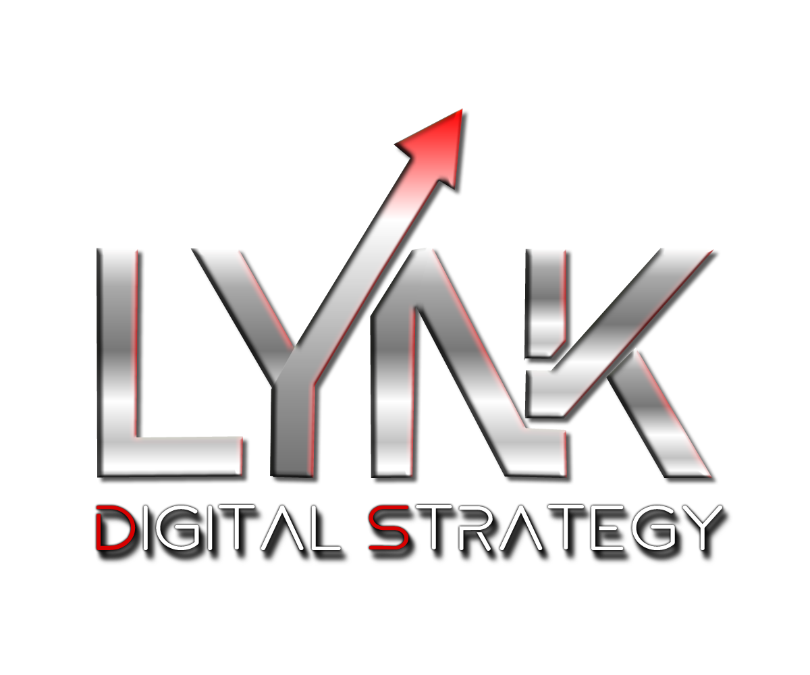
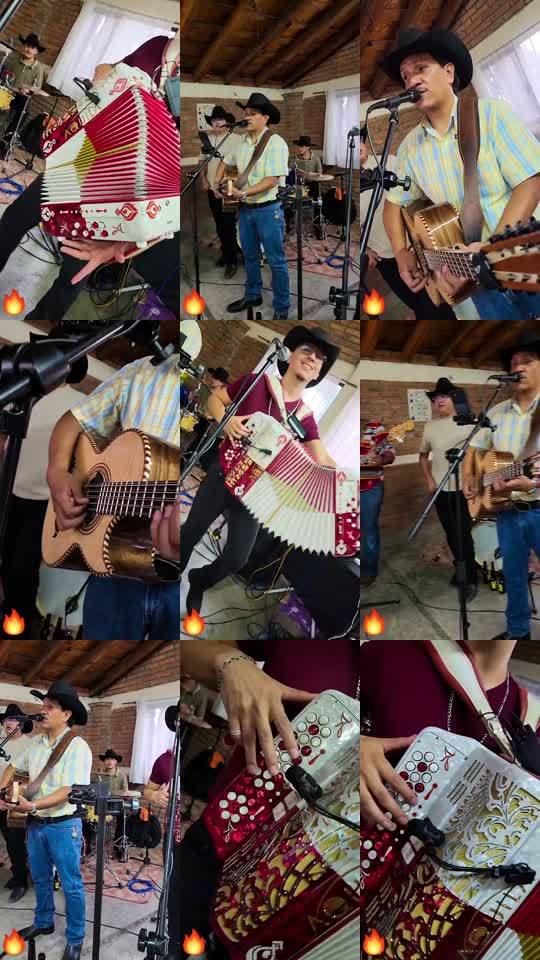

Material recibido
Video vertical H.264 de 90.16 s, 720×1280, con audio AAC; fotografías de ensayo/presentación y detalles de acordeón, guitarra y escenario.

Propuesta comercialUna ruta comercial para convertir el talento de un grupo norteño en una presencia digital clara, memorable y lista para recibir solicitudes de contratación.
Documento de propuesta inicial. El nombre del grupo, sus datos oficiales y la información del perfil público deben confirmarse antes de publicar.
LYNK Digital Strategy propone ordenar marca, contenido y atención comercial en un sistema que pueda crecer por fases. Revisamos el MP4 original, tres fotografías proporcionadas y el enlace de Facebook compartido.
Video vertical H.264 de 90.16 s, 720×1280, con audio AAC; fotografías de ensayo/presentación y detalles de acordeón, guitarra y escenario.
Perfil de Facebook indicado por Dirección. La consulta externa fue restringida; no se toman como hechos el nombre, seguidores, publicaciones o interacción.
Una base comercial con identidad, reels, web, atención IA supervisada, calendario y seguimiento humano de solicitudes.

Las piezas siguientes son demostrativas y se basan en el material local disponible. No constituyen métricas de campaña ni garantizan contrataciones.
Video original recibido: referencia de encuadres, energía escénica y necesidades de edición.
Versión promocional de trabajo: jerarquía de marca, recorte vertical y presentación más directa.
Demo comercial con tratamiento LYNK visible. Debe aprobarse el uso de logotipos y cualquier copy antes de publicación.
Pilares: interpretación en vivo, historias de integrantes, repertorio, prueba social autorizada y llamados a contratación. Calendario editorial por temporadas y eventos.
Inicio con video, bio validada, galería, repertorio, formatos de evento, preguntas frecuentes, calendario y formulario de solicitud. La estructura sigue el patrón probado de EPK musical.
Asistente con respuestas aprobadas sobre formatos, zona, disponibilidad y datos requeridos. Escala a una persona cuando falte información o exista una negociación.
Formulario de evento → ficha de lead → revisión humana → cotización → seguimiento. No se promete pago ni reserva automática sin integrar y probar un proveedor.
Agenda pública con fechas confirmadas y agenda interna para solicitudes, bloqueos, seguimiento y cierre. Las fechas reales se cargarán solo con autorización.
Kit de piezas reutilizables: portada, reels, historias, EPK, miniaturas y plantilla de anuncio. El logo LYNK identifica la dirección estratégica; la marca del grupo queda pendiente.
Confirmar nombre, integrantes, logo del grupo, repertorio, zona, contacto y derechos de uso.
Editar sesión maestra, reels, fotos seleccionadas, bio y EPK con piezas aprobadas.
Montar página, formulario, WhatsApp Business y respuestas IA con escalamiento humano.
Revisar consultas, fuentes de tráfico, contenidos guardados y tiempos de respuesta para iterar.
La investigación externa se limitó a documentación de producto de sistemas ya probados: Bandzoogle: crear un EPK, WhatsApp Business: funciones, Calendly Routing y Mailchimp Customer Journey. La página de Facebook indicada no pudo auditarse automáticamente; no se presentan como hechos datos que no pudieron comprobarse.